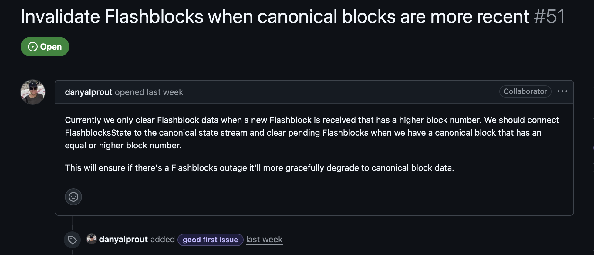
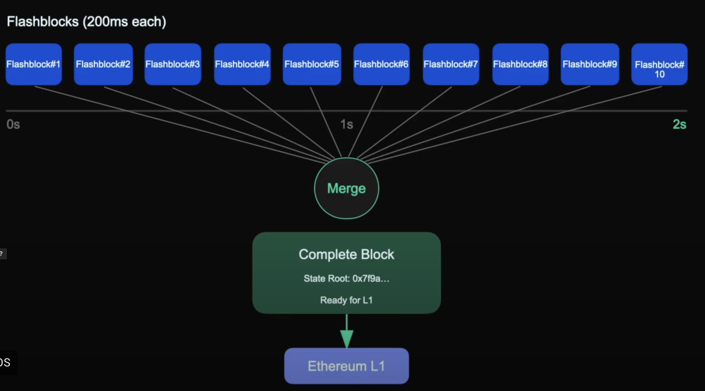

1 / 10
🚀 Flashblock ETL ExEx
Real-time flashblock state streaming
Building Real-Time Flashblock Data Streams
Implementing delta-streaming patterns with canonical chain awareness for high-performance pending state management
👨💻 About Me

Software Engineer & Blockchain Developer
- Specializing in high-performance blockchain infrastructure
- Experience with Rust, Go, and distributed systems
- Focus on real-time data streaming and ETL pipelines
- Contributing to Reth ecosystem and Execution Extensions
- Passionate about optimizing blockchain node performance
tl;dr:
Current dev rel at Atrium Academy
I love open source — and love Rust open source even more.
Today's Focus: Solving stale pending data issues through intelligent canonical chain integration
reth-node repo(GitHub Issue #51)

Goal: Connect FlashblocksState to the canonical chain to stream and clear pending flashblocks that have an older block height than the canonical chain canonical_height ≥ pendingFlashblock_height
Flashblock ETL ExEx Overview
- Flashblocks: Base protocol's real-time "next block" data feed
- ETL: Extract (stream from websocket), Transform (assemble base + deltas), Load (materialize in-memory view)
- ExEx: Reth Execution Extension, hooks into canonical chain events to clear stale pending snapshots
Key Innovation: Combines real-time streaming with canonical chain awareness for consistent pending state management
Flashblocks in Base Protocol

Flashblocks are sub-blocks issued by the block builder and streamed to nodes every 200ms, allowing for early confirmation times.
Each Flashblock contains ~10% of the transactions (by gas) of a regular block, and a series of Flashblocks can be combined to recreate a full block. They are an optional addition for nodes and applications that want to have a faster UX.
Delta-Streaming Pattern in Flashblock ETL ExEx
1. Base snapshot arrives (index=0) → create new PendingBlock
2. Subsequent chunks (index=1,2...) → merge diffs into in-memory pending snapshot
3.
Guards:
- Same-block, out-of-order deltas ignored
- New block without base clears state until next base arrives
4. Canonical commits → clear_on_canonical_catchup drops snapshot if canon_height ≥ pending_height
ArcSwapOption
Why It’s Fast
- Atomic storage pointer swaps → updates happen in a single CPU instruction, so both reads and writes are extremely fast.
- No locking needed → we never block other threads, even under heavy RPC load.
- Lock-free reads via
ArcSwapOption → constant-time lookups.
- In-memory materialization → no DB hits for pending state.
Execution Extension (ExEx) Hook
- Installed with
.install_exex_if(...) in main.rs
- Listens to canonical commits (
note.committed_chain())
- For each committed block →
fb.clear_on_canonical_catchup(b.number)
- Guarantees: No stale pending block is ever served once canonical has caught up
This solves the core issue where pending data could become stale relative to canonical chain progress
RPC Behavior & Interface
- eth_getBlockByNumber(Pending) → returns pending snapshot if exists; else None
- eth_getBalance / eth_getTransactionCount / eth_getTransactionByHash / eth_getTransactionReceipt → prefer pending view; fallback to canonical
- eth_call(Pending) → applies pending state overrides
Clean separation between pending and canonical data sources with intelligent fallback behavior
Performance Profile
I/O-bound Operations:
Network I/O: Flashblocks websocket + ExEx notifications
RPC I/O: Pending view reads + canonical fallbacks
Disk I/O: only when canonical provider hits DB
Low Latency Design:
- Lock-free reads via
ArcSwapOption
- Atomic snapshot swaps/clears
- In-memory pending state materialization
Future Work & Testing
Testing the Fix:
- Happy Path: Seed pending block → assert it's served → simulate catch-up → assert cleared
- Without Catch-Up: Seed pending block → skip clear_on_canonical_catchup → assert stale snapshot still served
Real-Data Replay Tests:
- Capture NDJSON from live Flashblocks feed
- Replay into
on_flashblock_received
- Use mock provider for deterministic headers/state
- Assert golden RPC outputs before/after canonical catch-up